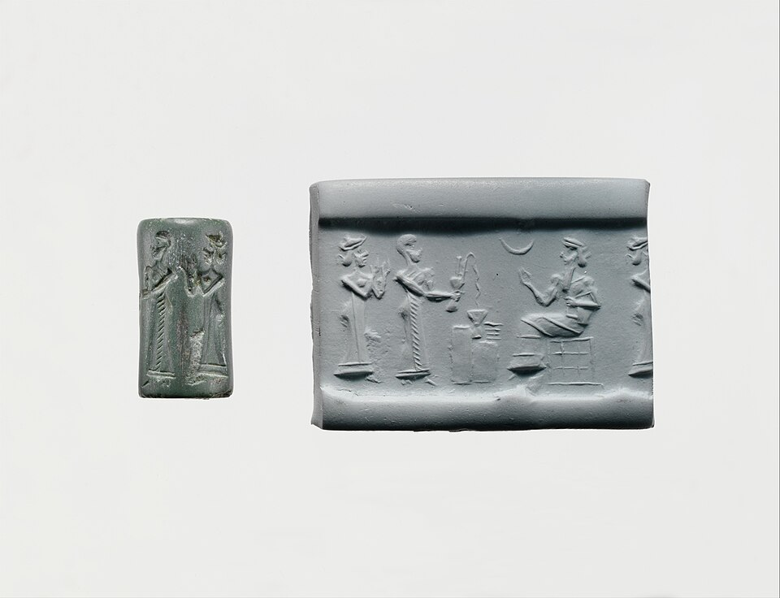
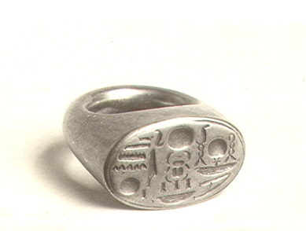
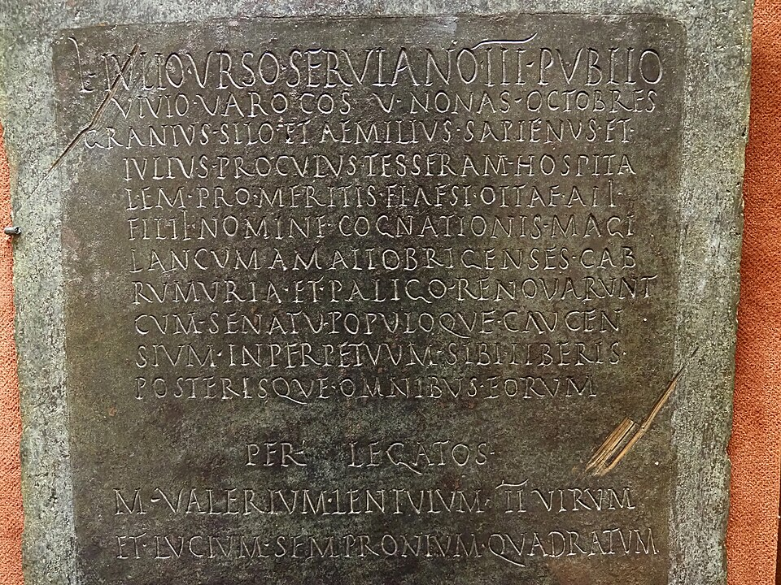

The fascinating history of authentication
“Trust, but verify.” Proving who you are is as old as civilization — so let’s tell it as one story: the same problem, solved again and again, each era handing its idea to the next.
🤔 Discuss first — Before computers, how did a Babylonian merchant, an Egyptian king, and a Roman soldier prove who they were? Across all of it there are just three tricks — can you name them?
▼- Something you know — a secret only you have: the Roman watchword, today a password or PIN.
- Something you have — a possession hard to copy: a signet ring, a token, today your phone or a hardware key.
- Something you are — a physical trait: a Babylonian fingerprint on clay, today Face ID / Touch ID.
- Every modern login is still one (or more) of these three. Keep count as the story unfolds.

A merchant needs a signature
Writing is brand new, but trade is already booming — and a deal pressed into a clay tablet is worthless unless you can prove who agreed to it. The Mesopotamian answer: a cylinder seal, a small carved stone rolled across the wet clay. The pattern it leaves is unique to its owner, hard to copy, and instantly checkable by anyone.
A few centuries later in Babylon, merchants go one better: they press a fingerprint into the clay. Now it isn’t an object vouching for you — it’s your own body.
👉 One chapter in, and two of the three factors are already on the table: something you have (the seal) and something you are (the fingerprint).

The king’s ring — and the first key revocation
Fast-forward two thousand years. Kingdoms now run on documents — decrees, treaties, tax orders — and a general has to know an order really came from the king. The answer travels on the king’s finger: a signet ring pressed into hot wax gives a unique pattern (identity), a seal that shatters if the letter is opened (tamper-evidence), and a mark the sender can’t later disown (non-repudiation).
That’s Tutankhamun’s actual ring in the photo. And here’s the detail engineers love: when a Pharaoh died, his ring was smashed the same day — so nobody could ever sign as a dead king. Egypt invented key revocation three thousand years before PKI.
⚡ Quick question — A wax seal promises identity, tamper-evidence and non-repudiation. What single modern mechanism makes exactly those three promises?
▼- A digital signature — it proves who signed (identity), breaks if the content is altered (integrity/tamper-evidence), and can’t be disowned (non-repudiation).
- Hold the thought: in Step 5 you’ll meet the JWT signature, which makes the same three promises for API requests.

Friend or foe? Rome answers twice
Rome hits two identity problems a seal can’t solve. First: how do two allied families recognise each other generations later? They break a token — a tessera hospitalis — in two, one half per family. Decades on, total strangers prove the old alliance by fitting the halves together. (Greek symbolon, “thrown together” — the origin of our word symbol.)
Second: it’s midnight at the camp gate. You can’t see faces, and soldiers don’t wear rings. So each night a fresh watchword is inscribed on a wooden tablet and passed from the general down through the ranks. Speak it and you’re in; get it wrong and you’re treated as a spy.
👉 And there it is — the third factor, the one we still fight with daily: something you know. The world’s first password.
⚡ Quick question — Why did Rome change the watchword every single night?
▼- Because spoken secrets leak — every ear that hears one is a potential copy, and a password can be stolen without you ever knowing (unlike a ring).
- Rotating it nightly limits the damage of any leak to a few hours — the exact reason your access tokens expire after 15–60 minutes in Step 5.
⏸️ Pause the story — notice the pattern
Three civilizations, three different problems — and every solution is one of just three tricks. In the 5,000 years since, nobody has found a fourth.
A war machine meets human laziness
Skip ahead to the biggest identity crisis ever staged: a world war fought over radio, where anyone can transmit anything. The German Enigma machine solved it with a shared secret — each day’s rotor order, ring settings and plugboard wiring. If a received message decrypted into readable German, it was authentic; gibberish meant wrong settings — or a fake.
Alan Turing’s team at Bletchley Park broke it anyway — and part of the reason was gloriously human: bored operators kept picking predictable message keys — girlfriends’ initials, repeated letters, the same patterns day after day.
👉 The strongest system in the world, undone by weak human choices. Sixty years later that’s still the #1 cause of breaches — remember it when we reach 123456.
The password meets the computer — and loses immediately
Then the computer arrives, and with it our problem in modern dress. MIT’s CTSS is one of the first time-sharing systems — many users, one machine — so for the first time software needs accounts, and accounts need passwords.
PhD student Allan Scherr is allotted four hours of compute a week. He wants more. His “hack”: request a printout of the password file. The file is stored in plaintext, so the operator hands him every password on the system, and he quietly shares them with friends.
The first computer password system in history was breached within months — not by breaking the door, but because the secrets were stored readable. (Scherr confessed 25 years later; MIT was amused.)
⚡ Quick question — What single change would have made Scherr’s printout worthless?
▼- Store something derived from the password instead of the password itself — a one-way transformation that lets you check a login attempt but never read the secret back.
- That idea is the entire second half of today’s class — and it arrives in the very next chapter.

Slow by design
The fix comes from the people building Unix. Robert Morris Sr. and Ken Thompson decide the password file should never contain passwords: instead, Unix crypt uses your password as a key to encrypt a block of zeros and stores the result — a transformation you can repeat to verify, but not reverse to read.
And one more stroke of genius: they repeat the transformation 25 times, tuned to take about one second on 1976 hardware — fast enough for a login, painfully slow for someone trying thousands of guesses.
👉 Both of today’s big ideas — store a hash (Step 3) and make it slow (Step 4) — were born right here, five decades ago.
Full circle
And that brings the story home. Your ATM card + PIN? Something you have + something you know — two factors, exactly like a Roman carrying both a tessera and the watchword. Your phone unlocking at a fingerprint? Babylon’s clay tablet, four thousand years later. Passkeys and FIDO2? The signet ring reborn as a cryptographic key that’s unique, unforgeable — and revocable.
The problems never changed — impostors, leaked secrets, lazy humans. Only the technology did. So let’s make the two questions every backend must answer precise…
📜 The whole story on one line
🎯 Epilogue — which factor do you reach for today?
The three tricks never changed, but each has found a modern sweet spot — and kept a fatal flaw. Guess every cell before you click its row.
Click a row to reveal its cells — guess each first.
| Factor | Superpower | Fatal flaw | Reach for it when… |
|---|---|---|---|
| 🧠 Know (password, PIN) | free, works anywhere, nothing to carry | guessable, reusable, phishable — humans pick 123456 | the baseline — nearly every account starts here |
| 🔑 Have (phone, hardware key) | can’t be guessed from afar; a FIDO2 key won’t sign in to a fake site | can be lost, stolen, or left at home | money or admin power is involved — the step-up factor |
| 🔬 Are (fingerprint, face) | nothing to remember or carry — survives 50 unlocks a day | you can’t rotate your face if it leaks | fast local unlock of the device that holds your other factors |
Now play architect — for each situation, decide what you would demand, and why, before revealing:
Click a row to reveal its cells — guess each first.
| Scenario | Factor(s) | Why |
|---|---|---|
| Unlocking your phone, 40th time today | Are (Face / Touch ID) | speed wins — and the biometric never leaves the device |
| Email login on a brand-new laptop | Know + Have (password + OTP) | unknown device = higher risk → demand a second factor |
| Approving a ₹2,00,000 bank transfer | Know + Have (PIN + confirm on phone) | value spiked mid-session → step up: add a factor at the moment of risk |
| A CI server deploying to production | Have (a signed key / token) | machines can’t remember or be fingerprinted — they hold a revocable credential |
123456 — proving we’ve learned nothing since 1962.